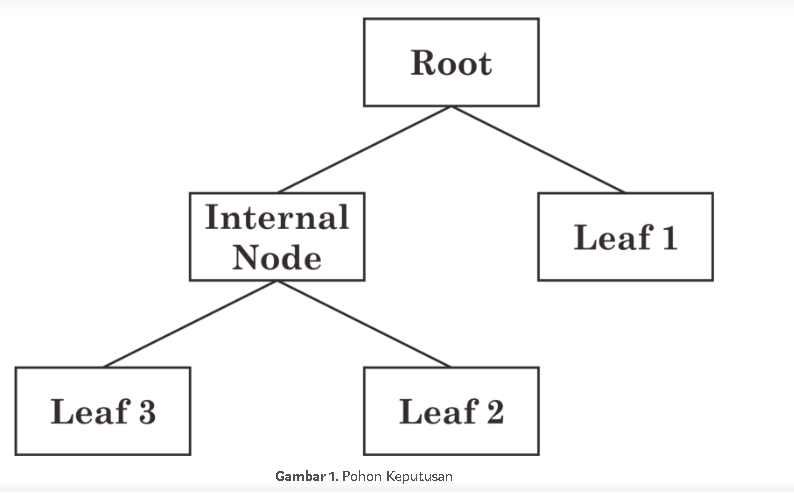

pohon keputusan
DECISION TREE
Pohon keputusan dalam aturan keputusan (decision rule) merupakan metodologi data mining yang banyak diterapkan sebagai solusi untuk klasifikasi. Decision tree merupakan suatu metode klasifikasi yang menggunakan struktur pohon, dimana setiap node merepresentasikan atribut dan cabangnya merepresentasikan nilai dari atribut, sedangkan daunnya digunakan untuk merepresentasikan kelas. Node teratas dari decision tree ini disebut dengan root.
Breiman et al. (1984) menyatakan bahwa metode ini merupakan metode yang sangat populer untuk digunakan karena hasil dari model yang terbentuk mudah untuk dipahami. Dinamakan pohon keputusan karena aturan yang terbentuk mirip dengan bentuk pohon. Pohon terbentuk dari proses pemilahan rekursif biner pada suatu gugus data sehingga nilai variabel respon pada setiap gugus data hasil pemilahan akan lebih homogen. Pada pohon keputusan terdapat tiga jenis node, antara lain :
1. Akar Merupakan node teratas, pada node ini tidak ada input dan dapat tidak mempunyai output atau dapat mempunyai output lebih dari satu. 2. Internal *node* Merupakan node percabangan, pada node ini hanya terdapat satu input dan mempunyai output minimal dua. 3. Daun Merupakan node akhir atau terminal node, pada node ini hanya terdapat satu input dan tidak mempunyai output (simpul terminal).
Sebagai contoh suatu pohon disusun oleh simpul t1, t2, …, t4 dengan rincian terdapat 3 daun, 1 akar, dan 1 internal node. Setiap pemilah (split) memilah simpul nonterminal menjadi dua simpul yang saling lepas. Hasil prediksi respon suatu amatan terdapat pada simpul terminal (daun).

Konsep dari pohon keputusan adalah mengubah data menjadi pohon keputusan dan aturan-aturan keputusan. Pohon keputusan merupakan himpunan aturan if — then, dimana setiap path dalam pohon dihubungkan dengan sebuah aturan dimana premis terdiri atas sekumpulan node yang ditemui dan kesimpulan dari aturan terdiri atas kelas yang dihubungkan dengan daun dari path. Pembentukan pohon keputusan terdiri dari beberapa tahap :
1. Konstruksi pohon diawali dengan pembentukan akar (terletak paling atas). Kemudian data dibagi berdasarkan atribut-atribut yang cocok untuk dijadikan daun.
2. Pemangkasan pohon (tree pruning) yaitu mengidentifikasikan dan membuang cabang yang tidak diperlukan pada pohon yang telah terbentuk. Hal ini dikarenakan pohon keputusan yang dikontruksi dapat berukuran besar, maka dapat disederhanakan dengan melakukan pemangkasan berdasarkan nilai kepercayaan (confident level). Pemangkasan pohon dilakukan selain untuk pengurangan ukuran pohon juga bertujuan untuk mengurangi tingkat kesalahan prediksi pada kasus baru dari hasil pemecahan yang dilakukan dengan divide and conquer. Pruning ada dua pendekatan yaitu :
a. Pre-pruning yaitu menghentikan pembangunan suatu subtree lebih awal (dengan memutuskan untuk tidak lebih jauh mempartisi data training). Saat seketika berhenti, maka node berubah menjadi leaf (node akhir). Node akhir ini menjadi kelas yang paling sering muncul di antara subset sampel.
b. Post-pruning yaitu menyederhanakan tree dengan cara membuang beberapa cabang subtree setelah tree selesai dibangun. Node yang jarang dipotong akan menjadi leaf (node akhir) dengan kelas yang paling sering muncul.
3. Pembentukan aturan keputusan yaitu membuat aturan keputusan dari pohon yang telah dibentuk. Aturan tersebut dapat dalam bentuk if — then*diturunkan dari pohon keputusan dengan melakukan penelusuran dari akar sampai ke daun. Untuk setiap simpul dan percabangannya akan diberikan di *if, sedangkan nilai pada daun akan ditulis di then. Setelah semua aturan dibuat maka aturan dapat disederhanakan atau digabung.
Decision tree adalah suatu model klasifikasi yang paling populer karena mudah diinterpretasikan oleh manusia. Banyak algoritma yang dapat digunakan dalam pembentukan pohon keputusan seperti ID3, C4.5, CART, dan GUIDE. Algoritma decision tree banyak digunakan dalam proses data mining karena memiliki beberapa -
kelebihan :
1. Mudah mengintegrasikan dengan sistem basis data.
2. Memiliki ketelitian yang baik.
3. Dapat menemukan gabungan tak terduga dari suatu data.
4. Daerah pengambilan keputusan yang sebelumnya kompleks dan sangat global dapat diubah menjadi lebih sederhana dan spesifik.
5. Dapat melakukan eliminasi untuk perhitungan-perhitungan yang tidak diperlukan. Karena ketika menggunakan metode ini maka sampel hanya diuji berdasarkan kriteria atau kelas tertentu.
6. Fleksibel untuk memilih fitur dari internal node yang berbeda, fitur yang terpilih akan membedakan suatu kriteria dibandingkan kriteria yang lain dalam node yang sama.
Kekurangan pohon keputusan adalah.
1. Terjadi overlap terutama ketika kelas-kelas dan kriteria yang digunakan jumlahnya sangat banyak. Hal tersebut juga dapat menyebabkan meningkatnya waktu pengambilan keputusan dan jumlah memori yang diperlukan. 2. Pengakumulasian jumlah error dari setiap tingkat dalam sebuah pohon keputusan yang besar. 3. Kesulitan dalam mendesain pohon keputusan yang optimal. 4. Hasil kualitas keputusan yang didapatkan dari metode pohon keputusan sangat bergantung pada bagaimana pohon tersebut didesain.
Berikut coding nya
pertama-tama anda harus menginstall numpy, pandas, sklearn dan semua itu kamu tinggal pergi cmd lalu klikkan "pip install numpy", "pip install pandas", dan "pip install sklearn" lalu buka apk pyCharm klik file , klik setting lalu pilih numpy dan klik install dan juga lakukan hal yang sama untuk pandas dan sklearn.
# Run this program on yo ur local python
# interpreter, provided you have installed
# the required libraries.
# Importing the required packages
import numpy as np
import pandas as pd
from sklearn.metrics import confusion_matrix
from sklearn.model_selection import train_test_split
from sklearn.tree import DecisionTreeClassifier
from sklearn.metrics import accuracy_score
from sklearn.metrics import classification_report
# Function importing Dataset
def importdata():
balance_data = pd.read_csv("Toddler Autism dataset July 2018.csv", sep=',' , header=None)
#'https://archive.ics.uci.edu/ml/machine-learning-'+
#'databases/balance-scale/balance-scale.data',
# sep= ',', header = None)
# Printing the dataswet shape
print ("Dataset Lenght: ", len(balance_data))
print ("Dataset Shape: ", balance_data.shape)
# Printing the dataset obseravtions
print ("Dataset: ",balance_data.head())
return balance_data
# Function to split the dataset
def splitdataset(balance_data):
# Seperating the target variable
X = balance_data.values[:, 1:5]
Y = balance_data.values[:, 0]
# Spliting the dataset into train and test
X_train, X_test, y_train, y_test = train_test_split(
X, Y, test_size = 0.3, random_state = 100)
return X, Y, X_train, X_test, y_train, y_test
# Function to perform training with giniIndex.
def train_using_gini(X_train, X_test, y_train):
# Creating the classifier object
clf_gini = DecisionTreeClassifier(criterion = "gini",
random_state = 100,max_depth=3, min_samples_leaf=5)
# Performing training
clf_gini.fit(X_train, y_train)
return clf_gini
# Function to perform training with entropy.
def tarin_using_entropy(X_train, X_test, y_train):
# Decision tree with entropy
clf_entropy = DecisionTreeClassifier(
criterion = "entropy", random_state = 100,
max_depth = 3, min_samples_leaf = 5)
# Performing training
clf_entropy.fit(X_train, y_train)
return clf_entropy
# Function to make predictions
def prediction(X_test, clf_object):
# Predicton on test with giniIndex
y_pred = clf_object.predict(X_test)
print("Predicted values:")
print(y_pred)
return y_pred
# Function to calculate accuracy
def cal_accuracy(y_test, y_pred):
print("Confusion Matrix: ",
confusion_matrix(y_test, y_pred))
print ("Accuracy : ",
accuracy_score(y_test,y_pred)*100)
print("Report : ",
classification_report(y_test, y_pred))
# Driver code
def main():
# Building Phase
data = importdata()
X, Y, X_train, X_test, y_train, y_test = splitdataset(data)
clf_gini = train_using_gini(X_train, X_test, y_train)
clf_entropy = tarin_using_entropy(X_train, X_test, y_train)
# Operational Phase
print("Results Using Gini Index:")
# Prediction using gini
y_pred_gini = prediction(X_test, clf_gini)
cal_accuracy(y_test, y_pred_gini)
print("Results Using Entropy:")
# Prediction using entropy
y_pred_entropy = prediction(X_test, clf_entropy)
cal_accuracy(y_test, y_pred_entropy)
# Calling main function
if __name__=="__main__":
main()
tinggal di ubah di baris ke-16 berdasarkan nama file csv anda
Sumber :
Breiman, L., Friedman, JH., Olshen, RA., Stone, CJ., 1984, Classification and Regression Trees, Chapman &Hall/CRC, New York.